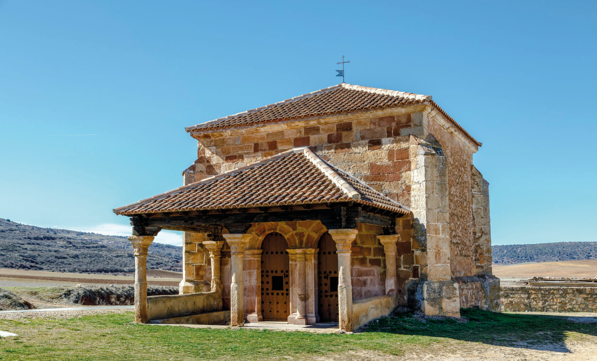
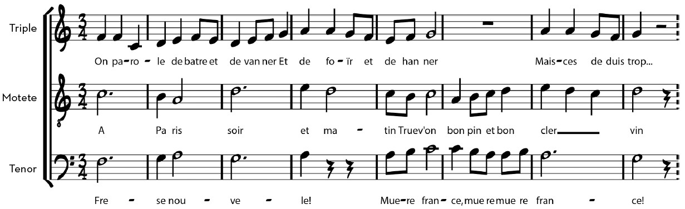

Música profana monofónica
Como hemos explicado con anterioridad, la monofonía era la textura predominante. No obstante, al igual que se evolucionó del estilo arquitectónico románico al gótico, en la música se pasó de emplear la monofonía a la polifonía.
 |
|
| Capilla románica de La Soledad, Palazuelos (Guadalajara). | Catedral gótica de Santa María, Burgos. |
| La polifonía es una textura musical que consiste en componer música a varias voces que suenan de manera simultánea. |
Podemos dividir la música polifónica de la Edad media en dos periodos:
1. El Ars Antiqua: La primera polifonía religiosa (siglos IX al XIII)
Las primeras obras polifónicas no surgen hasta el siglo IX y lo hacen a partir del canto gregoriano. Tomando las melodías gregorianas como base, se añaden a estas otras voces a distancia interválica de cuarta o quinta, ya que, según la concepción medieval, estos eran los intervalos que sonaban bien. A estas primeras obras polifónicas se las llamó organum.
En los siglos XII y XIII se desarrolla una importante escuela musical en torno a la catedral de Notre Dame de París. Destacaron como compositores de polifonía en esta escuela Leonín y Perotín. Estos compositores desarrollaron una variante del organum llamada organum melismático.
Durante el siglo XIII surgen nuevos tipos de composición polifónica más complejos, como son el conductus y el motete.
- El conductus es una composición polifónica elaborada sobre melodías de nueva creación (y no gregorianas, como en el organum).
- Los motetes (mot significa ‘palabra’ en francés) surgen como composiciones a varias voces. En los primeros motetes medievales cada voz tenía su propio texto, a veces en diferentes idiomas.
2. El Ars Nova: la polifonía profana (siglo XIV)
En el siglo XIV la polifonía se seguirá desarrollando con compositores como Philippe de Vitry o Guillaume de Machaut. Empieza a adquirir más importancia la música profana y se desarrollan géneros polifónicos profanos, como la chanson.
ESCUCHAMOS PERO NO JUZGAMOS: POLIFONÍA ARS ANTIQUA
🎧 Audición 4
Escucha un fragmento de Organum de Léonin llamado Viderunt Omnes.
ESCUCHAMOS PERO NO JUZGAMOS: POLIFONÍA ARS NOVA
🎧 Audición 5
Escucha un fragmento de motete medieval. Observa en la partitura cómo es una obra a tres voces y que cada voz tiene su propio texto. ¿Puedes identificar cuándo y en qué orden entra cada voz en la audición? En el vídeo enlazado puedes ver la respuesta.
